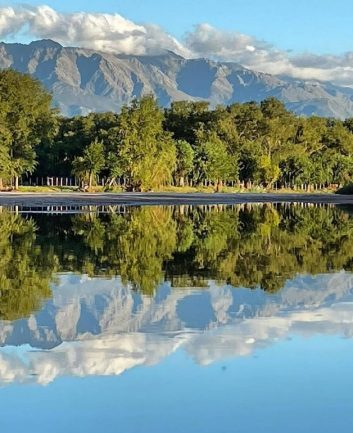

Nuestras Cabañas
Somos un emprendimiento familiar pensado en brindarte un espacio de armonía rodeado de naturaleza. Un lugar donde puedas descansar y dejarte sorprender día a día por las cosas simples que te regala la vida. Estamos ubicados en el corazón de traslasierra, a 3 km de Mina Clavero y a 5 km de Nono, lugar de fácil acceso sobre ruta 14 y a tan solo 200 metros del río los sauces, río característico por sus amplias playas de arena, aguas cálidas sin presencia de piedras, hoyos o corrientes peligrosas, ideal para disfrutar en familia y acompañado de bellos atardeceres de tonos rojizos. Heladerías, despensas, comedores y comercios a metros. El Complejo cuenta con 4 cabañas, ubicado en un predio de 1,2 hectárea totalmente arbolada con especies nativas, forestado y parquizado, predio totalmente cercado, cantero de aromáticas y medicinales para uso razonable de nuestros huéspedes. Estamos ubicados en un lugar amplio y cálido para que puedas disfrutar en contacto con la naturaleza, del trinar de los pájaros los atardeceres rojizos y las noches de cielo diáfano.
